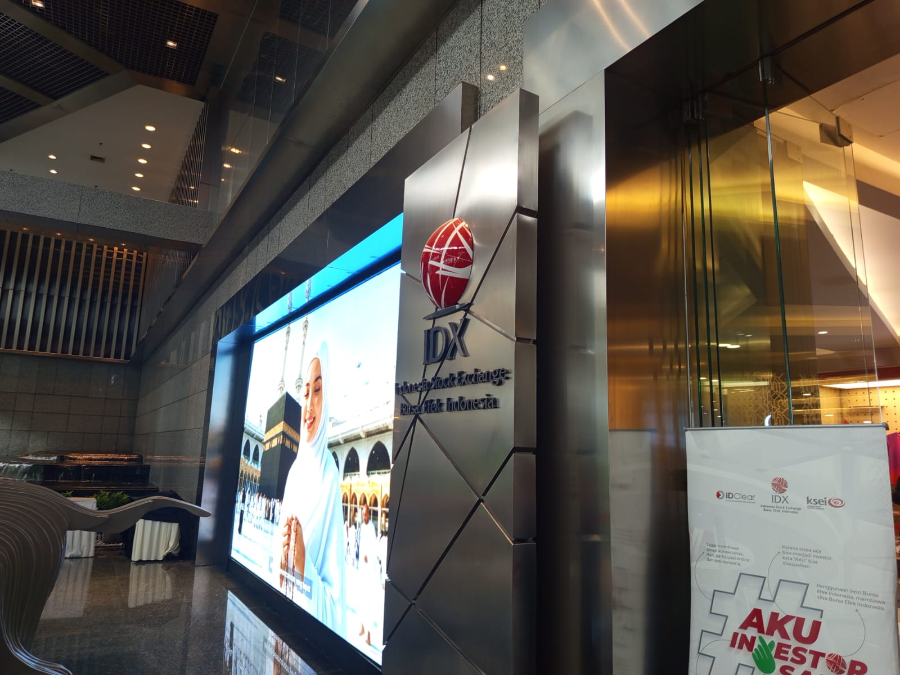

Yang dipelajari:
Digital Documentation of Industrial Visit
Menyelami Jantung Pasar Modal Indonesia
Catatan visual kunjungan industri ke Bursa Efek Indonesia, Jakarta. Dari galeri sejarah, zona investasi, hingga Main Hall tempat denyut pasar modal terasa.
01 · Profil
Mengenal Bursa Efek Indonesia
Bursa Efek Indonesia (BEI, atau Indonesia Stock Exchange / IDX) adalah lembaga yang menyelenggarakan dan menyediakan sistem serta sarana untuk mempertemukan penawaran jual dan beli efek. Di sinilah saham, obligasi, reksa dana, ETF, dan instrumen lain diperdagangkan secara teratur, wajar, dan efisien.
BEI bekerja bersama lembaga lain di ekosistem pasar modal: OJK sebagai pengawas, KSEI sebagai penyimpan dan penyelesaian efek, serta iDClear sebagai lembaga kliring dan penjaminan penyelesaian transaksi. Ketiganya tampak pada materi edukasi di lobi gedung.
SahamObligasiReksa DanaETFEdukasi Investor

Capaian BEI yang tercatat di papan pameran
Angka diambil dari Papan Pencapaian BEI Sepanjang Tahun 2025 yang kami foto saat kunjungan.
Lini masa sejarah (klik untuk detail)
02 · Rangkaian Kegiatan
Alur Kunjungan dari Lobi hingga Main Hall
Pilih tahap kegiatan untuk melihat apa yang kami lihat dan pelajari.
03 · Galeri
Galeri Dokumentasi
13 foto dokumentasi. Klik foto untuk memperbesar, gunakan tombol panah keyboard untuk berpindah.
04 · Vlog
Vlog Kunjungan Industri (90 Detik)
05 · Kesimpulan dan Refleksi
Apa yang Kami Bawa Pulang
Kesimpulan
“If you are born poor it's not your mistake, but if you die poor it's your mistake.”
Kutipan di dinding galeri BEI, tertulis atas nama Bill Gates